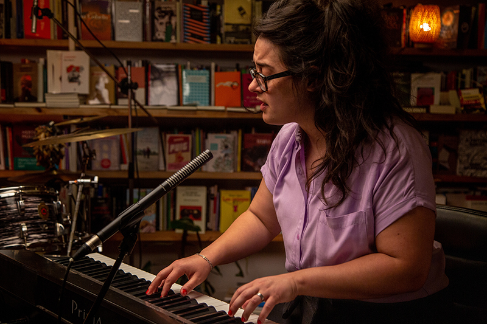
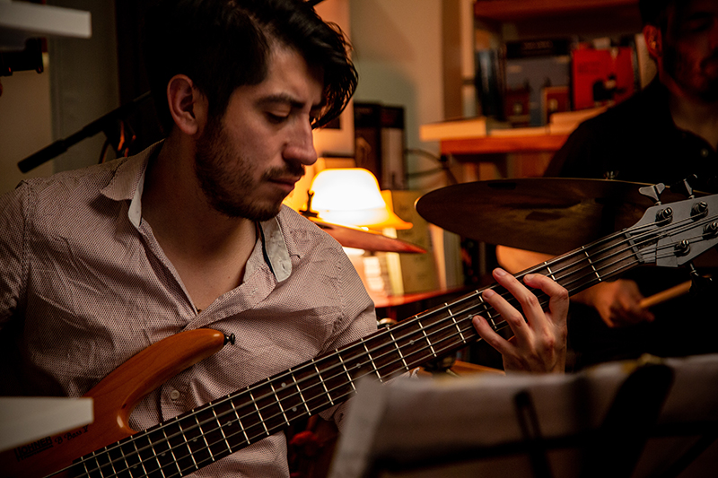

Sobre
nosotrxs
Proyecto FolklorICA es un trío que explora la música folklórica desde un espacio expresivo íntimo y personal.
Su repertorio es una búsqueda de posibilidades interpretativas que abarca adaptaciones para acompañamiento de bajo solo, piano y voz, y formato trío con invitadxs.
pEl proyecto es una invitación a adentrarse en un universo sonoro en el que dialogan la herencia folklórica y la expresión sensible. Proyecto FolklorICA propone una puerta de entrada a ambos mundos.


Brenda Almirall
Jacobo Garcia Cargua
Germán Coco Gutierrez